Views and graphics
This chapter describes the views of the model, how each one is drawn, and how to change what a view shows and how: graphic styles, scale and detail, the cut heights of a plan, crop regions, hiding and isolating, Visibility and Graphics, filters and view templates. Line weights, line patterns and styles by category are described in the same terms by the program's dialogs of Settings on the rail.
3D views
Views ▸ Create ▸ 3D View ▸ Default 3D View opens the default 3D view, {3D}, framing the whole model; opened again, it shows the model as it was left. Drag to orbit (or Shift and the middle button), drag with the middle button to pan, and turn the wheel to zoom at the cursor; see The interface.
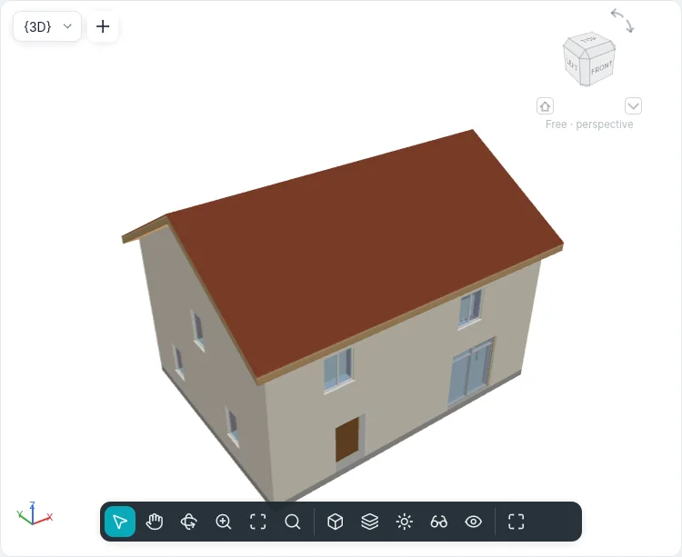
To keep a framing, Views ▸ Create ▸ 3D View ▸ Save View: type a name and press Enter. The new view is listed under 3D Views in the Project Index and opens at once; it keeps the framing it is left with. Renaming {3D} in the Project Index (right-click ▸ Rename…) does the same: {3D} becomes a named view, and the next default 3D view is a new {3D}.
A selected element is washed in blue and half see-through, its edges in blue: what is behind it stays visible.
Floors cut the walls they pass through: where a slab crosses a wall the wall stops under it and goes on above it, so the slab's edge and the wall's face are one surface.
Graphic styles
The Graphic Style button of the view control bar, at the bottom of every view window, offers:
| Style | What is drawn |
|---|---|
| Wireframe | Every edge, also those behind other faces; no faces |
| Lines | Faces as white paper and the edges in front of them in dark ink, on the light and on the dark background alike |
| Shaded | Faces lit, in the colour of their material |
| Shaded with Edges | As Shaded, with the edges in front |
| Flat Colors | Faces in the colour of their material, the same whatever the light |
| Realistic | Faces as in a photograph: the light of the project’s sun and sky, reflections, ambient shadows, see-through glass, haze |
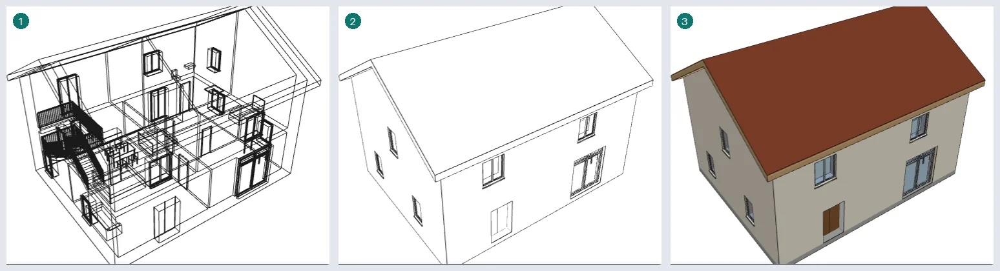
The style belongs to the view and can be undone. The keyboard shortcuts WF, HL and SD
choose Wireframe, Lines and Shaded.
The edges are the real ones: where two faces meet at an angle, and the outline of each face and each opening. A wall with a window shows its own outline and the window's, and no line where the pieces of the wall meet.
Plans, sections and elevations have a graphic style too. A plan is drawn in Lines until another style is chosen. In Lines the surfaces, cut or seen, are not coloured: what is cut shows its material's cut pattern; at Coarse detail the type's coarse fill pattern, or else only its outline. In Shaded, Shaded with Edges and Flat Colors every element seen or cut is filled with the shading colour of its material (a part with no material takes its category's, from Styles by Category, else the category's default colour; the 3D view follows the same rule): walls (each layer where it is cut), floors, roofs, doors, windows, furniture and components, stairs and railings. Plans are flat; in sections and elevations Shaded darkens a little the faces turned away from the viewer, such as the slopes of a roof, while Flat Colors keeps them all alike. At Medium and Fine detail the cut patterns stay on top of the colour. Sheets, prints and exported drawings show the views as the screen does.
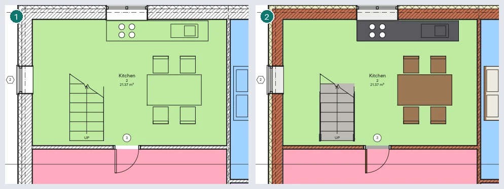
The rooms' colour scheme shows in every style. With Color scheme location at Background it lies under the model's lines: in a plan over the floors and under the furniture, in a section over the surfaces seen through each room it cuts. At Foreground it covers the model, under the annotations.
Realistic style
Realistic draws the 3D view like a photograph, in real time, on the graphics card, and the view stays editable as in the other styles.
- Light of the sun and the sky. The light is that of the project’s sun (place, date and time in Sun settings) and of the sky that sun gives: blue by day, warmer and darker at sunset. The sun lights the model even with shadows off; with Cast shadows its shadows are those of the other styles. What is in shadow stays lit by the sky and the ground. The sun's disc appears when it comes into the frame, with a glow, and the model hides it. Towards sunset the sun's light turns warm and weaker and the shadows lengthen; after sunset only the sky is left, fading into a blue-violet twilight with a pink band on the horizon on the sun's side; at night the sky is dark blue and the scene almost dark (self-illuminated surfaces stay visible). Dragging the sun or following a sun study changes the light continuously.
- Moon and stars. The moon is where it is at the project's place, date and time, in its phase: lit on the side facing the sun, the rest faintly grey (earthshine), redder near the horizon. At night it is the light: with Cast shadows the model casts moonlight shadows, and a full moon lights the scene softly where a new moon leaves it almost dark. Once the sun is down the brighter stars come out in their places, more of them the darker the sky.
- Materials. Surfaces take the look of their material (the Appearance tab of Materials): the texture image at its real size, the roughness and its map, the relief, metal, glass and water, self-illumination (seen, not lighting others). A material without a look of its own derives it from its colour and transparency; a part without a material takes its category’s colour. On the web the images arrive later: until then the colour shows. The preview of the Appearance tab is drawn by the same renderer, on a sphere, a cube or a 2 × 2 m wall (without a graphics card, by an image computed apart).
- Glass. Glass shows what is behind it and reflects the sky and the sun, more when seen at a grazing angle. Panes are drawn from the farthest to the nearest.
- Ambient shadows. With Ambient shadows corners and recesses, which get less light from the sky, are darker.
- Haze. In the distance the air veils the model: Distance haze sets how much, and how clear the sky is.
- Exposure. Automatic follows the light of the scene and adapts in about half a second when it changes (turning the camera from the sky to the shade, or changing the time). Manual uses the Value (EV): higher is darker, about 15 under the midday sun.
In the Realistic group of the Graphic display options: Exposure and Value (EV), White point (the light shown as white: 6500 K is daylight as it is, a lower value cools the image, a higher one warms it), Saturation, Highlights and Shadows (lower or raise the lightest and darkest tones) and Distance haze. Show edges in Realistic draws the edges over the faces. The lighting Scheme is for now always Exterior: sun. Sun, Ambient light and Shadow intensity set the sun’s light, the sky’s and how dark the sun’s shadows are.
The Physical sky (time and place) Background shows behind the model the same sky that lights it, with the sun’s disc; with None, Sky or Gradient the background stays as chosen and the sky still lights the model. Switching to Realistic, a view whose background is None gets Physical sky (time and place). Selected elements and the sun path look as in the other styles.
On the web without WebGPU (with WebGL2) Realistic works without ambient shadows, and the automatic exposure is set from the sky instead of from the image. On the web and on Android, while the camera moves, the view may be drawn smaller to stay smooth, and turns sharp again when it stops. Without a graphics card Realistic is shown as Shaded and the status bar says so. Plans, sections and elevations in Realistic are for now drawn as in Shaded; sheets, prints and exported images do not show Realistic yet.
Sun and shadows
Plans, sections, elevations and 3D views show the sun (drafting views, legends, sheets and schedules do not). The view control bar has two buttons, each with a small arrow for its menu (the right button opens it too):
- Sun Path: its menu has Show Sun Path / Hide Sun Path, Sun Settings… and Fit to Model (frames the whole sun path);
- Shadows: its menu has Shadows On / Shadows Off, Graphic Display Options… and Preview Sun Study.
While either is on, the bar also shows the sun's hour and date, each with − and + (a quarter of an hour, a day). The same buttons and menus are in the Sun and shadows menu of the BIMopen style's view bar, in the touch mode's view sheet and in the view's context menu. Sun Path is also a check box of the view's Properties (Graphics), with Sun Path Size (100–500 %, 150 % by default) and Shared Sun.
Shadows are computed from the model and the sun, the same in every view: in plans they fall on what the plan shows and, where nothing stands, on the plane of a level (Ground Plane at Level in the sun settings, otherwise on the ground, the lowest level); in sections and elevations they fall on the façades and on what is behind them, from eaves, balconies, recesses and other buildings; in 3D views the graphics card draws them (the processor when there is none). In Lines (hidden line) a shadow is a grey of the paper, in the shaded styles it darkens the materials' colours. Faces cut by the view stay in the light.
The sun path is a ring round the model with the points of the compass at true north, the day's arc with its hours, the analemma (where the sun stands at that hour through the year: one smooth figure of eight, every day at the clock of the chosen date), the part a study goes through, and the sun with its hour and date; in a 3D view it is a dome over the ring. In plans, sections, elevations and 3D views the sun can be dragged: along the day it snaps to quarters of an hour, along the year it follows the analemma day by day (across a change of summer time the clock moves by the change, so the sun does not jump); Shift while dragging takes the other, and Along the Day / Along the Year in the sun path's menu choose which comes first. The shadows follow the drag: in plans, sections and elevations, while the sun moves, they are a coarser draft, each view showing its last shadows until the new ones are ready, and they are drawn in full when the sun is released. With the view under the cursor (and nothing selected, or after a click on the sun), Left and Right move the hour, Up and Down the date. With Lighting the sun stands still and has no path.
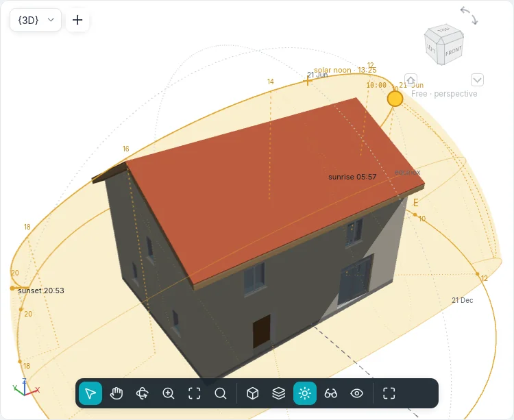
The sun path's menu (in the view bar, in the view's menu and in touch mode) also has Visual Aids that help read it: Vertical Hour Lines (from each even hour a dashed line down to the ground and out to the ring, with the hour there; in plans a dot on the ring), Arc Projected on the Ground, Solar Noon (the arc's highest point with its clock time, and the north–south line), Band of the Year (the sky the sun crosses in the year, in a light yellow, the arcs of the solstices and of the equinox, the analemmas of the even hours), Sunrise and Sunset (marks on the ring with their times; the view bar shows them with the length of the day) and Analemma; all but the projection are on at first. In a 3D view what stands behind the model is hidden by it. Sun Settings also show the year's sunrises and sunsets as a chart: a click or a drag on it picks the day.
Shared Sun: the views share the project's sun unless they have one of their own (the Shared Sun property). Moving the shared sun in one view moves it in every view that shares it; a view with its own sun is not touched. Shared Sun in All Views in the sun settings puts every view back on it.
Each change is one step of Undo; the sun command does the same at the command line and over
MCP (see Command line and MCP).
Sun settings
Sun Settings… opens a dialog with the sun's azimuth, altitude, time and date in its header:
- on the left the presets: one unsaved row for each mode, the built-in ones (Summer Solstice, Winter Solstice, Spring Equinox, Autumn Equinox, Summer, from 9 to 17, Light from top right) and the project's own; Save…, Duplicate…, Rename… and Delete (only the project's presets are renamed or deleted);
- in the middle the mode and its fields:
| Mode | What it takes |
|---|---|
| Still | the Date and the Time; Shared Sun in All Views |
| One Day | the Date, From Sunrise to Sunset or a Start Time and an End Time, the Frame Interval (15, 30 or 45 minutes, 1 hour); the number of Frames follows |
| Multi-Day | From and To (day/month), the Time, the Interval (1 hour, 1 day, 1 week, 1 month) |
| Lighting | Azimuth (°) and Altitude (°); Relative to View: the light follows the view's direction |
Then the project's Location (a city, or Custom with its latitude and longitude: one for the whole project; a custom place takes the time zone of the nearest city; a new project starts in Rome, the sample house stands in Cagliari) with Daylight Saving Time, which is automatic: the place's rule (Europe, North America, Chile, South-eastern Australia, New Zealand, Egypt, or none) and the exact Sunday of the sun's Year, so the times on the sun path and in the studies are those of the clock; the rule can be changed. Then Ground Plane at Level with its Ground Level; - on the right the preview: the sky seen from above, with the day's path, the analemma and the sun. Preview in the dialog's header, right of the figures, is a switch that hides and shows it; the dialog keeps its size, and without the preview the settings take its room.
Apply changes the view's sun and keeps the dialog open, OK changes it and closes it, Cancel changes nothing. Projects made before the project had a location keep each view's place and date: the first view whose sun was changed gives the project its location, and the views whose sun was changed keep theirs as their own.
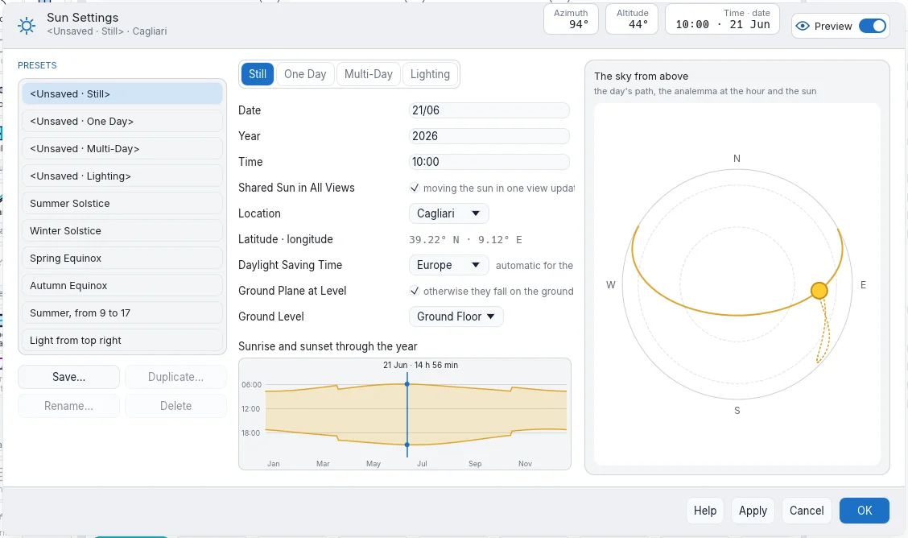
Sun study
Preview Sun Study (in the Shadows menu) shows the study bar over the view: ⏮ −10, ⏴, ⏵ Play / ⏸ Pause, ⏵, +10 ⏭ and frame n of N. A sun of one moment is studied through its day. Save as Image saves the frame shown as a PNG named after the view, the date and the hour; Export Study… saves every frame as a PNG or JPEG image sequence (a film needs a video encoder BIMopen does not have: the choice is greyed, with the reason). × closes the bar; another view closes it too.
Graphic display options
Graphic Display Options… sets for the active view: the Graphic Style, Silhouette Edges (None, Medium, Thick: a thicker line round the model's outline), Cast Shadows, Ambient Shadows (corners and recesses darkened), the sun (its button opens the Sun Settings), Sun, Ambient Light and Shadow Intensity (0–100) and, for 3D views, the Background (None, Sky, Gradient). The preview draws the view with the options chosen; the Preview switch in the header hides and shows it, as in the sun settings. View templates carry these options with the graphic style, and the sun and the shadows as Sun and shadows.
The Realistic group and Show edges in Realistic apply to the Realistic style (see Realistic style); Background also offers Physical sky (time and place). In the Realistic style the preview is drawn by the graphics card, as the view is.
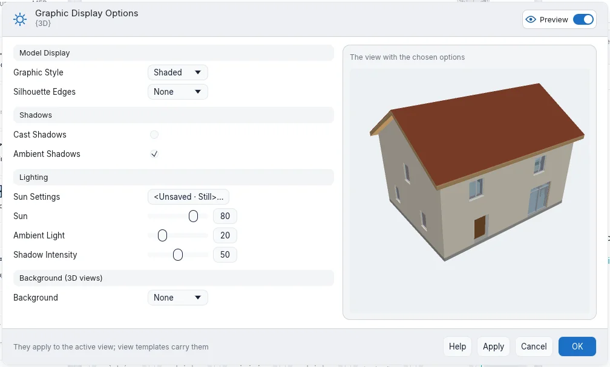
Sketchy lines
The Sketchy Lines group of Graphic Display Options… draws the view's lines as by hand. Enable Sketchy Lines turns it on for the active view; Jitter (0–10) sets how much each line wavers and how many times it is traced over (0 straight, twice from 4, three times from 8); long lines waver more than short ones. Extension (0–10) sets how far the lines run past their ends, past the corners where they meet (0 stops them there). Both start at 5 and 4. The ✎ button of the view bar (in every interface style; in touch mode, in the view's sheet) turns them on and off for the active view: Enable Sketchy Lines / Disable Sketchy Lines.
They apply in every view (plans, sections, elevations, drafting views, 3D views, views on sheets)
and in every visual style: to the lines of the model, of detail items and of fill patterns.
Annotations stay straight: dimensions, text, levels, grids, reference planes, tags, symbols and
view marks. A view draws the same lines at every redraw and after orbiting back, and prints and
exports exactly as the window shows it: PDF and SVG keep the lines as vectors, a printed section
or elevation leaves out only the parts nearer surfaces hide. Selecting and snapping still use the
straight lines. View templates carry the setting with the other graphic display options. On the
command line: graphicoptions {"sketchy":true,"instability":5,"extension":4}.
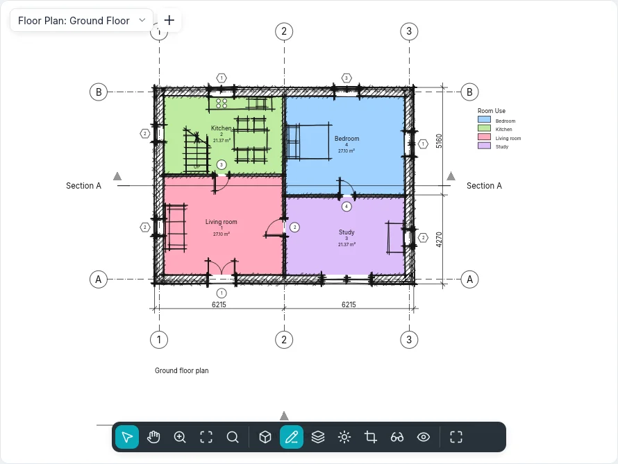
Plans and their cut heights
Views ▸ Create ▸ Plan ▸ Floor Plan opens New Plan: pick the levels and the scale, then OK. With Do not duplicate existing views on, the levels that already have a plan are left out; turn it off to make a second plan of a level.
A plan is a horizontal cut of the model at the Cut Plane of its cut heights. Walls crossing the cut plane are drawn cut, with the cut patterns of their layers' materials at Medium and Fine detail; lower walls and the floors of the level are seen from above.
To change the cut heights, select nothing (so that Properties shows the view), then Cut Heights ▸ Edit…. Each plane is measured from a level, with an offset:
| Plane | Level |
|---|---|
| Top | The plan's own level (Associated Level), the Level Above, a level by name, or Unlimited |
| Cut Plane | Always the plan's own level |
| Bottom | The plan's own level, the Level Below or a level by name |
| View Depth | As Bottom, or Unlimited |
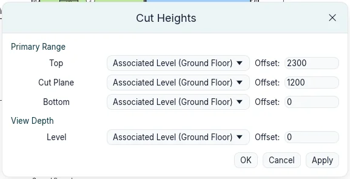
OK sets the four planes together, as one change. They must stay in order, from the top down (top, cut plane, bottom, view depth): otherwise the window explains what is wrong and stays open. Floors below the bottom, down to the view depth, are drawn beyond in thin lines; so are floors a little under the bottom, such as a sunken slab, even with the view depth at the bottom.
Light and dark background
Options ▸ Theme ▸ Dark (or Invert background color) turns the drawing area dark. As on an inverted background, black lines, text and patterns are drawn light, colours keep their hue, and colour fills such as the rooms' are darkened, so the text over them stays readable. Options ▸ Interface size makes the whole interface bigger, from 100 % to 250 %, on top of the screen's own scale: useful on screens with many pixels. It is kept for the next start.
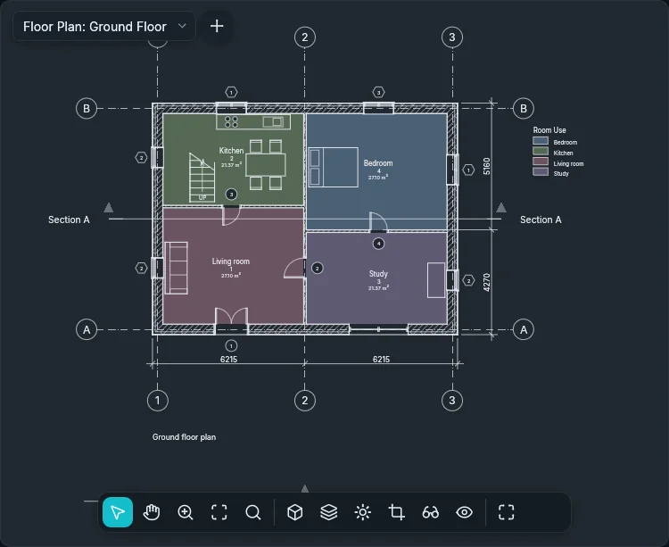
Opening a view from its symbol
Double-click a view's symbol to open its view: a section line or its head, an elevation symbol, a callout's boundary (a reference callout opens the view it points at), a level's line in a section or elevation (its floor plan opens), or a view placed on a sheet. The view's window becomes the active one.
Views ▸ Create ▸ Elevation ▾ ▸ Framing Elevation makes an elevation of a grid: click beside the grid, on the side to look from (before the click, a line and an arrow show the view). The elevation looks at the nearest grid, as wide as the bay between the grids that cross it and as deep as the next grid parallel to it.
Scale, detail and crop region
The view control bar shows the view's View Scale and Detail (in 3D views too).
- At a smaller scale the model is drawn smaller on paper while text, tags and symbols keep their size on paper: at 1:200 a text covers twice as much of the model as at 1:100.
- At Coarse a cut wall is one fill; at Medium and Fine its layers show, each with its material.
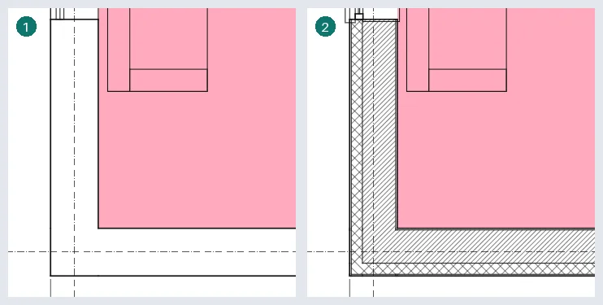
Sections cut the model the same way. Walls, floors and roofs that meet in the cut are drawn as one: a thick outline round them, a thin line only where two materials meet, none between two parts of the same material; walls attached to a roof stop under it. Each cut layer has its material's cut pattern (at Coarse, the type's Coarse Scale Fill Pattern in its Coarse Scale Fill Color, set on wall, floor and roof types, else only its outline). Furniture and plumbing fixtures are never cut: they are seen whole. A window is cut with its frame in the thick cut line and its glass in thin lines; what lies beyond the cut is drawn in thinner projection lines. Beyond the cut, and in elevations, a face in front hides what is behind it, and a window's glass is opaque: each window shows its frame and glass, not the rooms behind it.
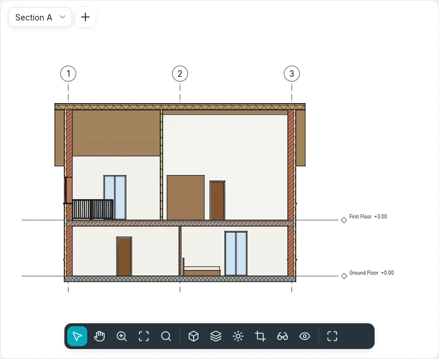
Crop View clips the view to its crop region, Show Crop Region draws the region; drag its edges to resize it. To type its size: Properties ▸ Size Crop ▸ Edit…, then Width and Height; the region keeps its centre.
Hiding and isolating
Isolate Temporarily (the glasses on the view control bar) acts on the selected elements, in the active view only, and does not change the project:
| Command | Shortcut | What stays visible |
|---|---|---|
| Isolate Element | HI |
Only the selected elements |
| Hide Element | HH |
Everything but the selected elements |
| Isolate Category | IC |
Only the categories of the selected elements |
| Hide Category | HC |
Everything but those categories |
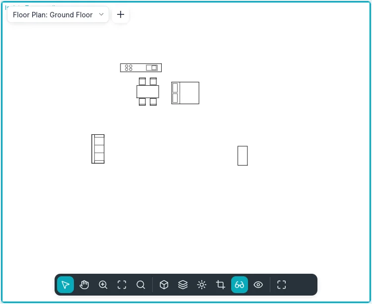
The view gets a coloured border. Each use narrows what is shown: hiding one element and then
another hides both. Reset Isolate Temporarily (HR) shows everything again; Apply
Hide/Isolate to View hides for good what was hidden for now.
To hide for good in the view, select the elements, then right-click ▸ Hide in view ▸
Elements or Category, or the contextual card's View ▸ Hide in View, or type EH
(elements) or VH (category).
Reveal Hidden (the light bulb on the view control bar, or RH) frames the view in
magenta and shows what is hidden in magenta, the rest in halftone. A hidden element can then be
selected and shown again: right-click ▸ Unhide in View ▸ Elements (or Category). Click
the light bulb again, or type RH, to leave.
Visibility and Graphics
Views ▸ Graphics ▸ Visibility and Graphics (or VG, or Properties ▸ Visibility/graphics
overrides ▸ Edit…) shows, for the active view, one row per category:
- the check box shows or hides the category; Show model categories in this view shows or hides them all;
- Projection lines and Cut lines: Override… sets the weight, colour and pattern;
- Surface Patterns and Cut Patterns: the material's patterns, hidden, in another colour or replaced by another fill pattern;
- Halftone blends the lines with the background;
- Transparent makes the surfaces see-through in the 3D view;
- Detail draws the category at another level than the view.
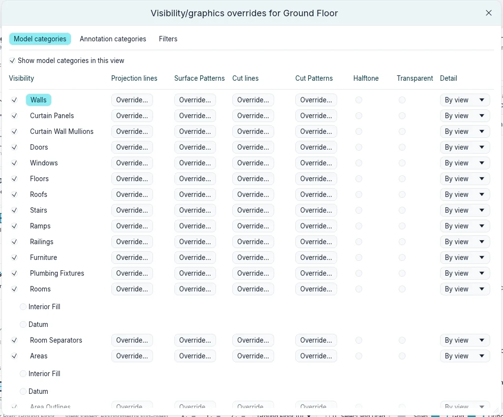
Clear overrides takes the selected rows back to the styles by category. Changes show at once: Apply keeps them and the window, Cancel (or the window's ×) takes back what was not applied, OK keeps them and closes.
One element can have its own graphics in a view: select it, then right-click ▸ Custom Graphics ▸ By Element… (or the contextual card's View group). View-Specific Element Graphics has Visible, Halftone, Transparent, the surface and cut patterns and the projection and cut lines. They apply only in this view, over the category's and the filters'.
Filters
Views ▸ Graphics ▸ Filters lists the project's filters: New, Duplicate, Rename, Delete. A filter has categories and up to four rules on their parameters, all of which an element must meet.
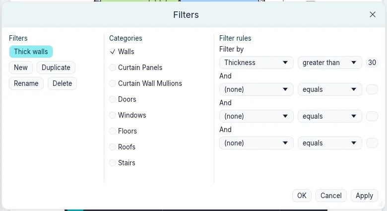
In Visibility and Graphics ▸ Filters, Add applies a filter to the view; its row then sets visibility, lines, Halftone and Transparent for the elements that pass it. Where filters disagree, the one higher in the list wins: Up and Down move the selected filter.
View templates
Views ▸ Graphics ▸ View templates ▸ Create template from current view keeps the view's scale, detail, graphic style, cut heights and graphics as a template, by name. View templates ▸ Apply template to current view gives them to another view of the same kind: a plan (a second plan of a level too), a section or elevation, or a 3D view. A view does not follow later changes of its template until it is applied again, and the graphics of single elements are never part of a template.
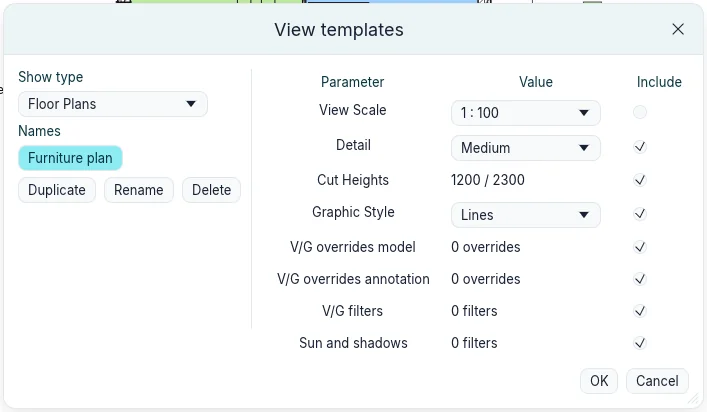
Managing views
Right-click a view in the Project Index:
- Duplicate View ▸ Duplicate copies the view with its properties; Duplicate with Detailing copies its dimensions, text, tags and 2D details too. The copy opens;
- Rename… asks for the new name (Rename View); names stay unique among views.
Views ▸ Windows ▸ Tile shows all the open views side by side, filling the drawing area: with three windows, the active one on the left at full height and two stacked on the right.
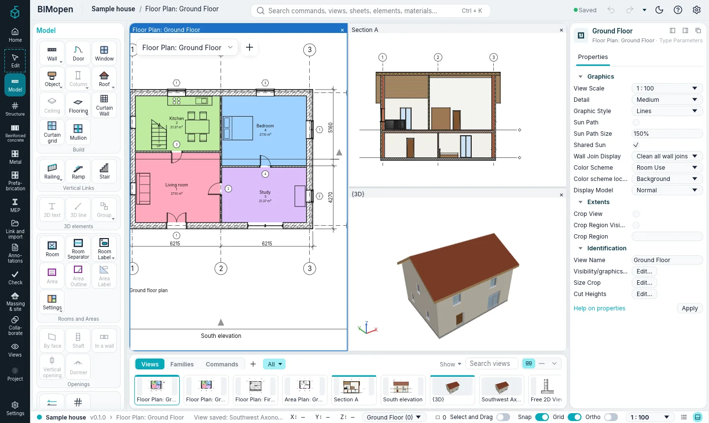